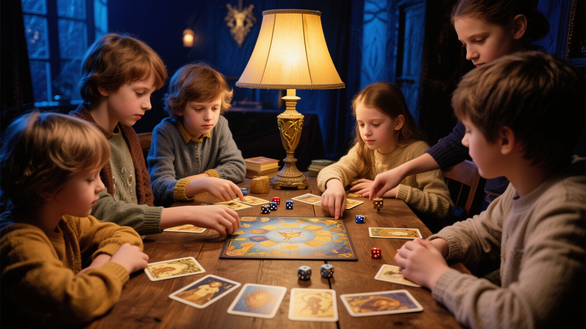
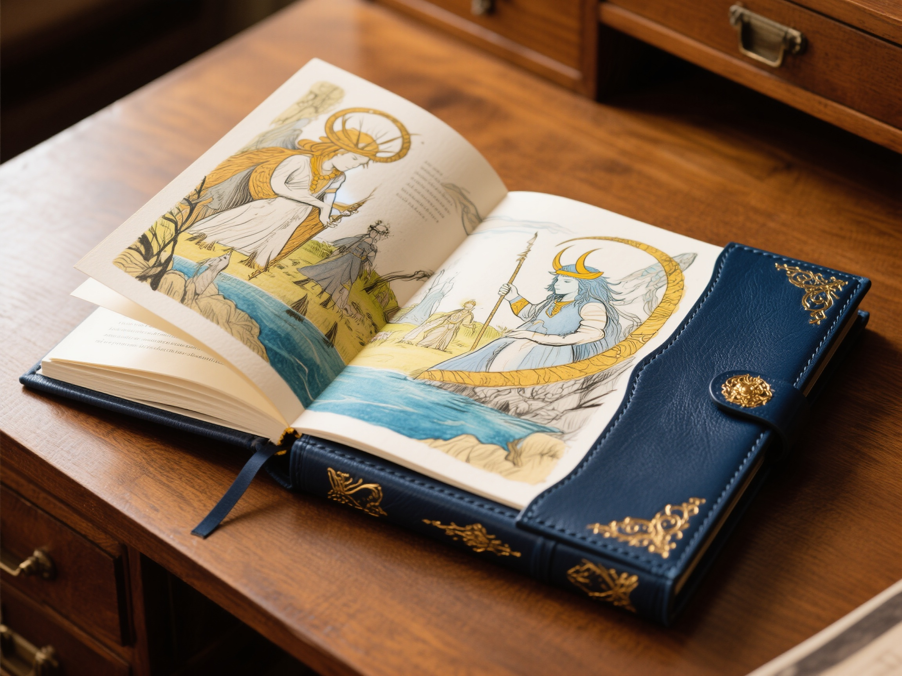
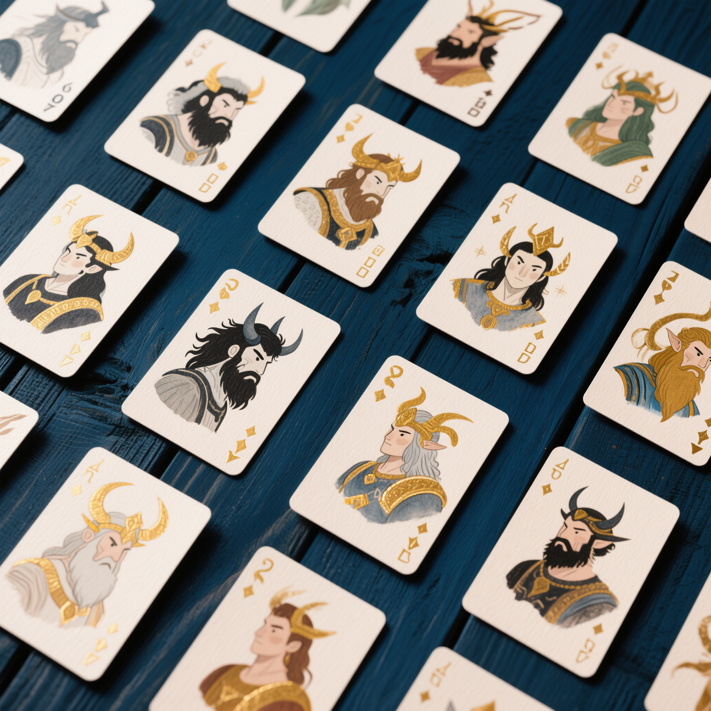

Weekly adventures in the world your child built, with simple rules, guided storytelling, and a storybook they keep forever. 在孩子创造的世界中展开每周冒险，简单规则、引导式叙事，最终制成一本永久珍藏的故事书。
The Storytelling Game is a weekly tabletop role-playing experience where children aged 8–14 adventure through the worlds they built in the workshop. With simple, age-appropriate rules and a guided story master, they create characters, face challenges, and build a shared legend — culminating in a beautifully printed storybook of their adventure.
叙事游戏是一项每周一次的桌面角色扮演体验，8-14岁的孩子在工作坊创造的世界中冒险。凭借简单适龄的规则和引导式故事大师，他们创造角色、面对挑战、共同构建传奇——最终制成一本精美印刷的冒险故事书。
My daughter has an amazing imagination, but she has no one to share it with. She writes stories alone in her room. I wish she could create with other kids. 我女儿有惊人的想象力，但她没有可以分享的人。她独自在房间里写故事。我希望她能和其他孩子一起创作。— David Kim, parent of a 12-year-old · Shenzhen
In the Storytelling Game, your child steps into the world they built — not as an observer, but as a hero. Each week, a trained story master guides a small group through a new chapter of their shared adventure. The rules are simple enough to learn in minutes, but the stories they create together can span an entire season. And at the end, their journey becomes a book they hold in their hands.
在叙事游戏中，你的孩子走进他们构建的世界——不是作为旁观者，而是作为英雄。每周，一位训练有素的故事大师引导一个小团体经历共同冒险的新篇章。规则简单到几分钟就能学会，但他们共同创造的故事可以跨越整整一个季度。而在最后，他们的旅程变成一本可以握在手中的书。
Your child designs a character in their world — a hero, an explorer, a mythmaker. Personality, skills, and a backstory.
你的孩子在世界中设计一个角色——英雄、探索者、神话创造者。性格、技能和背景故事。
Each week, the group faces a new challenge in their shared world. Choices matter. The story bends to their decisions.
每周，小团体在共同世界中面对新挑战。选择很重要。故事随着他们的决定而改变。
Players work together to solve problems, negotiate with characters, and shape the story. No one wins alone — the group creates together.
玩家协作解决问题、与角色交涉、共同塑造故事。没有人独自获胜——团体共同创造。
At the adventure's end, we compile their journey into a professionally printed, illustrated storybook. Each child gets their own copy.
冒险结束时，我们将他们的旅程编成一本专业印刷、配有插图的故事书。每个孩子都拥有自己的副本。

Every adventure ends in a storybook — professionally printed, beautifully illustrated, theirs forever.
At the end of each adventure, we take everything your child experienced — the characters they met, the choices they made, the challenges they overcame — and compile it into a professionally printed, illustrated storybook. Each child receives their own copy, personalized with their character's name and journey.
This isn't a participation certificate. It's a real book. One that grandparents ask to see. One that ends up on the bedside table. One that proves: your child didn't just play a game. They wrote a legend.
每次冒险结束时，我们将你孩子经历的一切——遇见的角色、做出的选择、克服的挑战——编成一本专业印刷、配有插图的故事书。每个孩子都收到自己的副本，以他们角色的名字和旅程个性化定制。
这不是参与证书。这是一本真正的书。一本祖父母会要求翻看的书。一本放在床头的书。一本证明：你的孩子不只是玩了一个游戏。他们书写了一段传奇。
Not at all. We designed our own rules system specifically for kids aged 8–14. Everything fits on a single page. No thick rulebooks, no math homework — just clear, simple mechanics that keep the focus on storytelling, not statistics.
A new player can learn the rules in ten minutes. But the stories that emerge from those simple rules? They can be surprisingly deep, funny, brave, and beautiful.
完全不会。我们专门为8-14岁的孩子设计了自己的规则系统。所有内容都浓缩在一页纸上。没有厚重的规则书，没有数学作业——只有清晰简单的机制，让焦点始终在叙事上，而非数据统计。
新玩家十分钟就能学会规则。但从这些简单规则中产生的故事？它们可以出人意料地深刻、有趣、勇敢而美丽。

Character cards — every hero starts with a name, a dream, and a single page of rules.
Every package includes a trained story master, all game materials, and a printed storybook.
| Feature特色 | Single Adventure单次冒险 | Season Pass季度通行证 | Legend Maker传奇创造者 |
|---|---|---|---|
| Sessions课时 | 4 weekly | 12 weekly | 24 weekly (full year) |
| Story arcs故事篇章 | 1 | 3 | 6+ |
| Character creation角色创建 | ✓ | ✓ | ✓ |
| Printed storybook印刷故事书 | 1 book | 1 book | 2 books |
| World expansion世界扩展 | — | ✓ | ✓ |
| Family showcase event家庭展示活动 | — | — | ✓ |
| Group size小组人数 | 3–6 kids | 3–6 kids | 3–6 kids |
| Age range年龄范围 | 8–14 | 8–14 | 8–14 |
| Price价格 | ¥1,288 | ¥3,388 | ¥5,888 |
Combined workshop + game discount available · 工作坊+游戏组合优惠可询
"My son's storybook arrived and he read it to his grandmother over video call. She cried. He was so proud. This isn't just a game — it's a memory."
"The rules are so simple that my 8-year-old picked them up in ten minutes. But the stories they create are surprisingly deep. The facilitator knows exactly how to guide without taking over."
"My daughter was shy and barely spoke in class. After one season of the Storytelling Game, she's confident, she tells stories to anyone who'll listen, and she has a book with her name on it."
Recommended but not required. If your child hasn't done the workshop, we'll help them quickly create a character and join an existing world built by other kids. The Worldbuilding Workshop makes the experience deeper — but the game stands on its own.
建议但不强制。如果你的孩子没有参加过工作坊，我们会帮助他们快速创建角色并加入其他孩子构建的现有世界。世界观工作坊能让体验更深入——但游戏本身也独立成立。
Simple and custom-designed for kids 8–14. No thick rulebooks — everything fits on one page. The focus is on storytelling, not mechanics. A child can learn all the rules in about ten minutes.
简单且专为8-14岁孩子设计。没有厚重的规则书——所有内容浓缩在一页纸上。焦点在叙事，而非机制。孩子大约十分钟就能学会所有规则。
3 to 6 children per group, led by a trained story master. Small enough for everyone to shine, large enough for surprising collaborative moments.
每组3-6名孩子，由训练有素的故事大师引导。小到让每个人都有表现机会，大到能产生令人惊喜的协作时刻。
A professionally printed, illustrated book that chronicles your child's adventure. Each child gets their own copy with their character's story, the choices they made, and the friends they made along the way. It's a real book — not a PDF, not a printout.
一本专业印刷、配有插图的书，记录你孩子的冒险。每个孩子都收到自己的副本，包含他们角色的故事、做出的选择和一路上交到的朋友。这是一本真正的书——不是PDF，不是打印件。
Sessions are for kids only — the magic happens when they own the story. But we host a family showcase at the end of each season where kids present their storybook, share their favorite moments, and invite parents into their world.
课程仅限孩子参加——魔力在于他们拥有自己的故事。但每个季度结束时，我们会举办家庭展示活动，孩子们展示他们的故事书，分享最喜爱的时刻，并邀请家长进入他们的世界。
Get in touch and we'll find the right group for your child.联系我们，我们为孩子找到合适的小组。
Begin Your Child's Adventure →